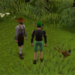
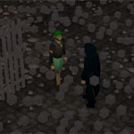

")
Random Events
Introduction
While playing RuneScape you might experience a strange, unexpected event, or notice something peculiar taking place nearby. These random events will typically involve the sudden appearance of an unusual animal or person, who will ask you to perform a quick task for them or solve a puzzle. Completing the event won't take long, and if you're lucky you may well profit from it! Make sure you keep your wits about you, though, because random events can happen at almost any time and in almost any place.
How random events work
Random events will teleport you to unusual locations that may or may not be a part of RuneScape itself. You will not be able to leave until you either successfully complete the random event, or fail in the attempt. If you successfully complete the random event you will be returned to the spot you were taken from; if you fail, you will be teleported to a random location. Don't worry too much about failing an event, though: you will never be teleported to a dangerous location.
Random events will occur with a certain degree of regularity, but if you consistently complete events successfully, you will encounter them less frequently.
Types of random event

Bee-keeper
The bee-keeper has just acquired a new beehive, but he's having a little difficulty putting it together. Help him out by taking the four pieces of the new hive and showing him how they connect. Fail in the task, however, and you'll find yourself confronted by a swarm of angry bees.
Cap'n Arnav's Chest
Pirates aren't usually known for their generosity, but this one's a little different. Maybe it's because he lives alone on a desert island, or maybe it's just that he's spent too much time in the sun. Whatever the reason, if you help him open his treasure chest, he'll be more than happy to demonstrate his gratitude.
Certer
There are in fact three of these so-called “certers”: Niles, Miles and Giles. They have a strange penchant for subjecting adventurers to seemingly pointless identification tests. It's probably best just to go along with it, to be honest – it seems to keep them happy.
Drill Demon
Drop and give me twenty! Come on, private, show me what you've got! The Drill Demon is here to whip you into shape, and he won't accept any shirking. Press-ups, star jumps, sit-ups - you'll have to work hard to impress this demon, but if you follow his orders, he'll favour you with a reward.
Evil Bob
Evil Bob is always on the lookout for human slaves to serve him on his mysterious island. He'll whisk you off to ScapeRune without a moment's hesitation, where you'll be forced into a life of perpetual servitude. The only way to escape is to wait for Bob to fall asleep, but he won't take his cat-nap before he's had something to eat...
Evil Twin
Life's hard when you have an evil twin, as Molly knows only too well. She's managed to capture her wicked sister, but the evil girl has used a spell to drag some innocent bystanders into prison with her! Pluck the evil twin out of the crowd and you'll earn Molly's gratitude.

Freaky Forester
This peculiar chap has a fondness for pheasant, but he prefers to get others to do the hunting for him. He's quite picky, too, and won't accept just any bird. It seems that the important thing is the number of tail feathers the pheasant has, but don't ask me why. Just make sure you get the right bird, or the Freaky Forester will be displeased.
Kiss the frog
Everyone knows that the only way to turn a frog back into a prince (or a princess, for that matter), is to give it a kiss. I know it sounds a little unpleasant, but if you're willing to help, there's a reward in it for you. So if you're approached by a talking frog, get ready to pucker up...
Gravedigger
This short-sighted gravedigger has managed to put five coffins in the wrong graves. If he'd looked more closely at the headstones, he might have known where each one was supposed to go! Help him by matching the contents of each coffin with the headstones in the graveyard. Easy, huh?
Lost and Found
If you find yourself in the Lost and Found office, the chances are you've slipped into the Abyssal plane. This is a sort of intermediate realm, where the lost and confused find themselves from time to time. Don't worry, though: you should be able to get back to RuneScape without much difficulty.

Maze
It might look straightforward, but this maze is deceptively difficult. Fortunately, the Mysterious Old Man is on hand to give you some advice, and help you navigate the labyrinth. Find your way to the centre of the maze to earn a reward; the quicker you manage it, the bigger the prize!
Mime
My mum always used to tell me: “if you suddenly find yourself on stage with a mime artist, just copy everything he does, and you'll be fine.” Turns out she was right. Watch him do his thing, and then mimic his performance. What could be simpler!
Pillory
Hapless adventurers may find themselves locked in the pillory, a sort of one-person prison cell, where they will quite probably be pelted with rotten tomatoes. Getting out should be pretty easy, though, provided you can identify the correct key for the lock...
Pinball
This giant game of pinball shouldn't give you too many problems; just keep an eye on the poles, and tag whichever one is illuminated. Once you've tagged the correct pole ten times, you'll be free to go. Oh, and don't irritate the trolls guarding the exit, or they may give you a good drubbing!
Prison Pete
Poor Prison Pete has been trapped in the mirror world of ScapeRune for years, and now you've been imprisoned, too! To secure Pete's escape – and yours – you'll have to find the key to the prison. Perhaps it's inside one of those weird balloon animals...
Quiz Master
Welcome to RuneScape's most popular quiz show: Odd One Out! You have been specially selected to take part: all you have to do to win is give four consecutive correct answers. It's easy – just identify the odd one out. So, you know the rules - let's play!
Sandwich Lady
Feeling hungry? I thought so. The Sandwich Lady likes to make sure that adventurers are well fed, and will occasionally spirit them away to her magical sandwich shop for a quick snack. She can be a bit short-tempered, though, and if you take something you've not been offered she'll get really angry!
Surprise Exam
The Mysterious Old Man seems to think you need a bit of intellectual exercise, and he's going to make sure you get it! In Mr Mordaut's classroom you'll take a seat among a peculiar bunch of pupils to undertake a test of your pattern-recognition skills. Pay attention, and you'll do fine.
Rewards
Whenever you successfully complete a random event, you will be given a random event gift box. (The only exception to this is the Maze event.) Inside the box will be a selection of items, from which you can choose one reward. Gift boxes will always contain a selection of coins, runes, coal, essence, ore, bars, gems, herbs, seeds, charms and experience lamps for you to choose from. In addition to this, some gift boxes will give you the choice of costume points, which can be exchanged for part of an outfit with Iffie at Thessalia's clothes shop in Varrock.
Retired random events
Some random events are no longer active, which in most cases is because the person (or creature) responsible was considered to no longer be up to the job. Most of the guardians, for example, now spend their days in the Enchanted Valley (which you can get to using the fairy rings), while some of the more unsavoury types, like Cap'n Hand, reside in Port Sarim jail. You'll still see Dr Jekyll from time to time, dashing to the Varrock apothecary in a desperate bid to keep Mr Hyde in check; and if you're in Karamja to the south-west of Brimhaven, you may come across the strange plant, which still produces rather excellent fruit. The Drunken Dwarf will also be seen on occasion, staggering about in an erratic fashion. If you talk to him, and he takes a liking to you, he might treat you to a kebab and some beer.

More articles in
Game Guide
|
|
|
Further Help
If this article does not help you, you may find the following sections of the RuneScape site helpful:
|
|